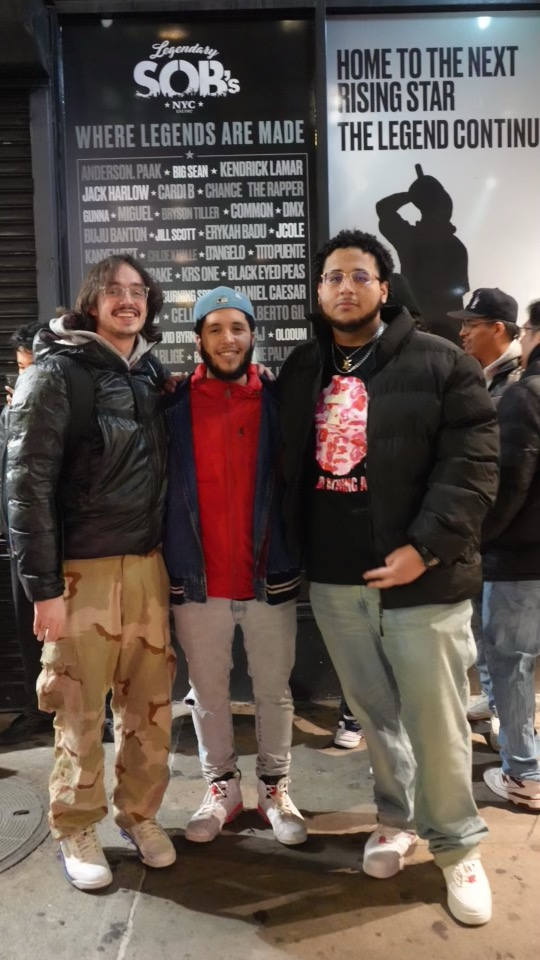

Hello everyone, my name is Simon Barley, A.K.A Iceberg, and I am a rap protégé. My songwriting journey begins when I was in high school, specifically senior year in the fall. Me and my friend Rakeem, and some others would bang on the lunch tables making beats, and we would freestyle. It was just for fun, but I fell in love. So, I kept on freestyling, but then covid hit and we all had to go home so I stopped for the moment. This was in 2020, and during that summer Rakeem would send me beats and I would write to them. I never recorded anything because I didn't know how. Freshman year I freestyled a couple of times, it really depended on the company I was with. But I never took it seriously. In the springtime I had some mental struggles, and one of the ways I found solace was in writing. I never put anything down Sophomore year came and went, my mind was focused on other things. Last fall, I studied abroad in London, and that experience change my life. I met Rolando Cabral, A.K.A Young Roley. Me and Rolando met through class, and after the first night we went out together, we were just chilling and he asked me if I wanted to freestyle. Of course I said yes, and after that night my passion was ignited. London has an immersive and extensive music culture, and I dove right in. Rolando and I went to multiple open mics at pubs, warehouses, and clubs. I heard all types of music. I also saw my favorite rapper ever perform live at the O2 arena in London, Kendrick Lamar. I also saw Joey Bada$$. Aside from live music, I also deeply explored the genre of hip hop. I listened to all the legends; OutKast, Kendrick Lamar, Lil Wayne, Chance The Rapper, Drake, Jay Z, J.Cole, Kanye West, The Notorious B.I.G, Tupac, Wu-Tang Clan, A$AP Mob, and Odd Future. Most of those artists/groups I knew of, but I didn't know anywhere close to the depth of their talents. That's when I really fell in love with hip hop. Granted performing it is a newfound love, I am obsessed. The combination of Rolando's influence with learning more about rap music made me want to make and perform music. In London I wrote a few songs, and when I came back home for break I wanted to learn how to engineer. I have a basic understanding, enough to record my own songs. Over winter break, Rolando had a show at SOB's, a venue in Manhattan. I went to the show and Rolando introduced me to Fear No Human (FNH). Fear No Human is an artist collective, comprised of the following artists; Young Roley, Elwop, Jay Waters, Gamble, Iceberg, and Albe. I met all of them in person, and they liked my stuff and invited me to be a part of the collective. Into the spring semester, I got introduced to the SENSES project on campus. It's a student run studio, where they do everything music. So this semester I've been spending some of my time in the SENSES studio, working on my craft, creating new and expanding on existing relationships, and having an incredible time doing it. I hope to utilize this website as a place where I can showcase my knowledge, gain traffic, and share my opinions on music.
Young Roley, also known as Rolando, is a rapper and hiphop artist based out of Manhattan. He's a part of the artist collective known as Fear No Human. Roley has put out multiple singles; Whatchu Got In Your Cup?, Thinkin, and others; as well as a senior year tape titled The Senior Year EP. Roley is working on his debut album right now, called The College Graduate. Also he is consistently getting work done with Fear No Human.